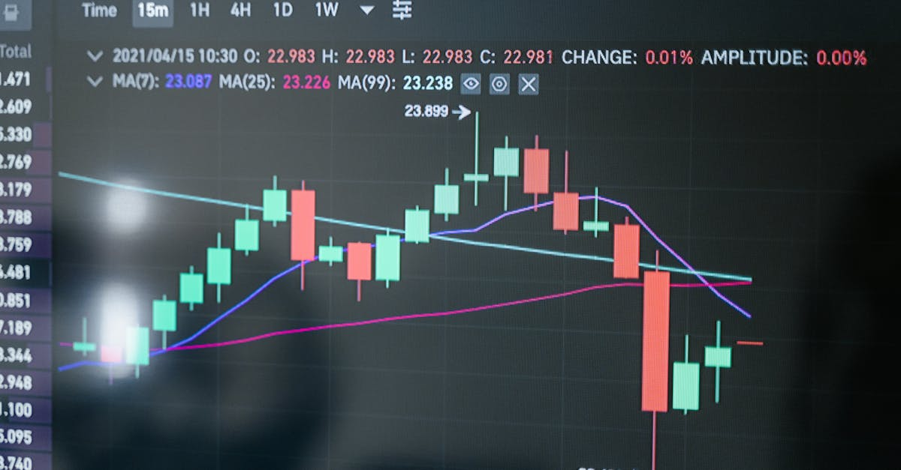
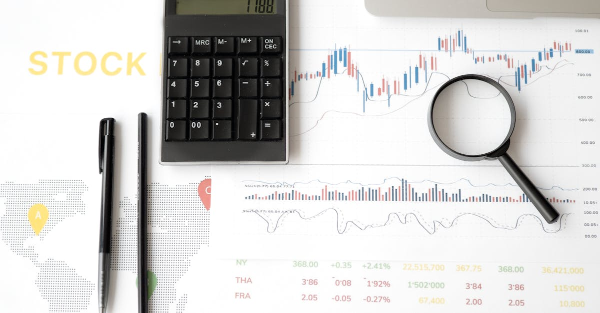
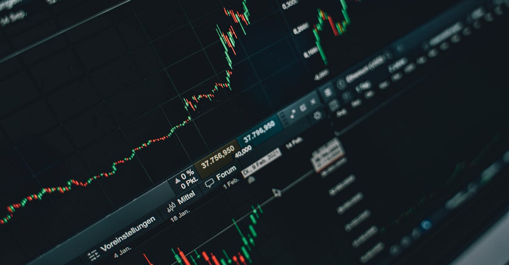
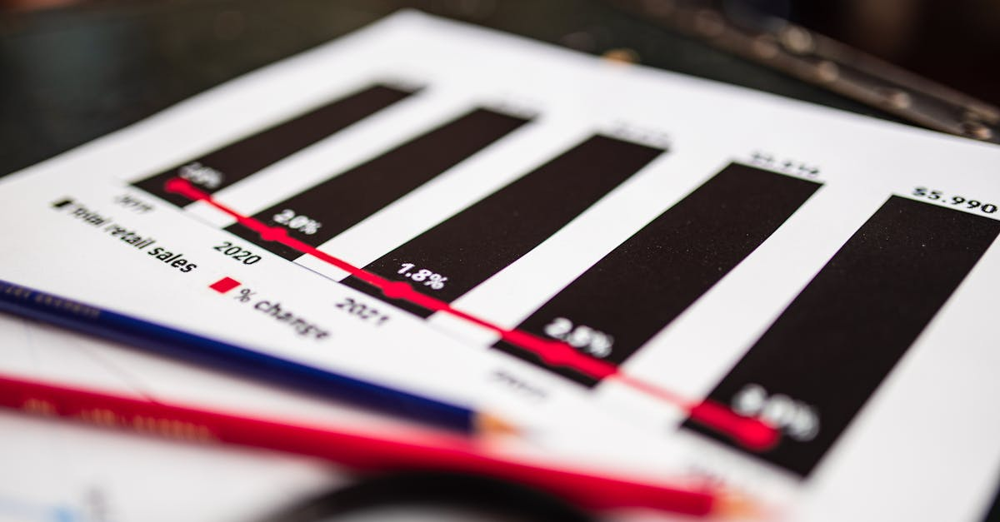
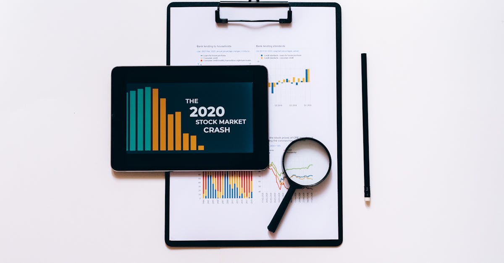
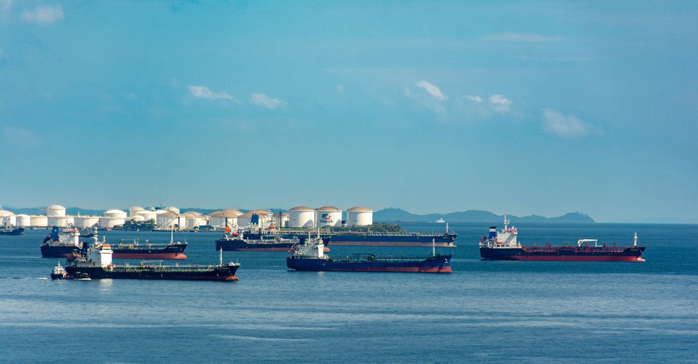
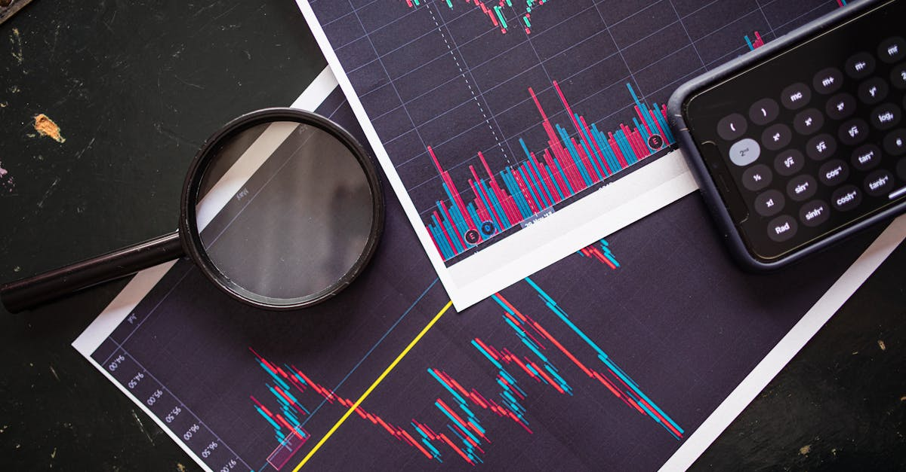
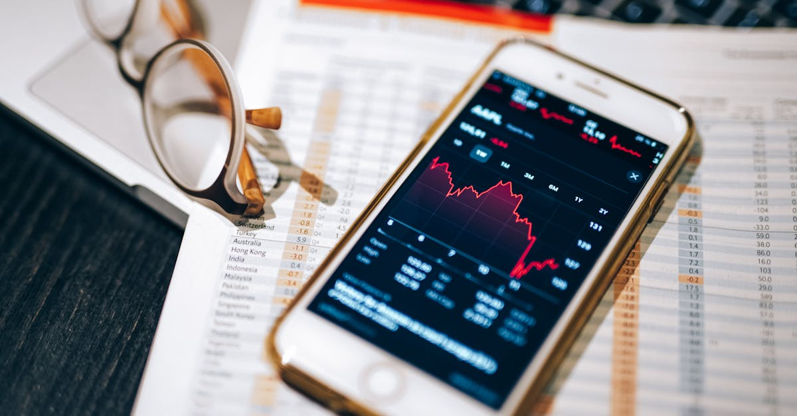
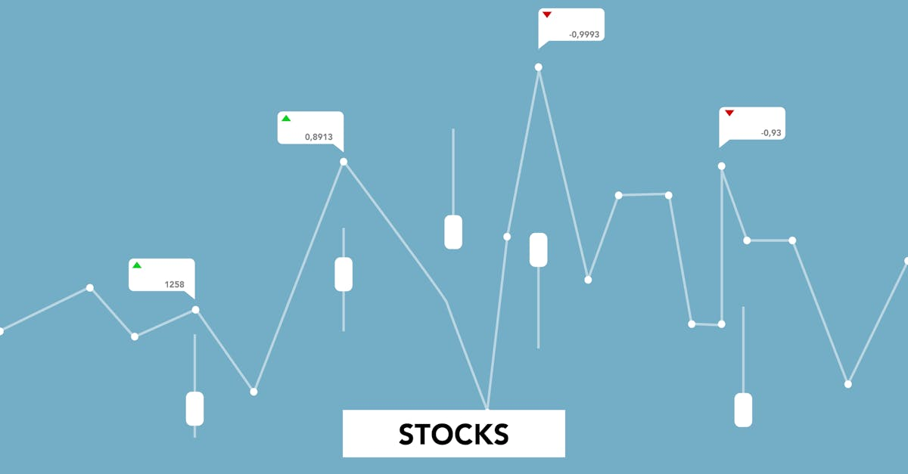

Massie : Le MAGA dissident qui interroge l'investissement
Analyse de la position unique de Thomas Massie, ses critiques envers Trump et l'impact sur les stratégies d'investissement, notamment dans le contexte du trading forex automatisé.
Kushner & Witkoff au Pakistan : Implications pour le Forex ?
La visite de Kushner et Witkoff au Pakistan pour des pourparlers avec l'Iran soulève des questions sur la stabilité régionale et ses impacts sur le marché des changes.

Intel : prévisions de ventes explosives, que retenir pour les marchés ?
Intel surprend Wall Street avec des prévisions de ventes exceptionnelles. Analyse de l'impact sur les marchés financiers et la stratégie d'investissement.

NIO : Rentabilité, Guerre des Prix, et l'IA dans le Trading
Interview exclusive du Président de NIO sur la rentabilité, la guerre des prix des VE, l'impact géopolitique et les perspectives pour le secteur automobile. Analyse pour les investisseurs.

Marchés Indiens : La Fiducie des Investisseurs à l'Épreuve
Les rendements des fonds communs de placement indiens sous pression. Les investisseurs maintiennent-ils le cap malgré les pertes dues à la guerre ?
Crédit Privé : Le Défi Majeur Selon le CEO de Stifel
Ron Kruszewski, CEO de Stifel, alerte sur un décalage de liquidité dans le crédit privé. Analyse des enjeux pour les investisseurs et le marché.

Tensions Iran-Israël : Le Pétrole S'Envole, Quel Impact sur le Forex ?
L'escalade des tensions au Moyen-Orient et le blocage d'Hormuz propulsent le pétrole. Analyse des répercussions sur le marché des devises et l'IA trading.

Bourse : L'argent étranger afflue, le Brésil séduit
Les investisseurs étrangers injectent massivement des capitaux en bourse brésilienne. Analyse de cette tendance et ses implications pour 2026.

IA: Qui possédera la recherche et le trading forex ?
L'IA révolutionne la recherche et le trading forex. Découvrez comment les LLM transforment ces marchés et les opportunités pour le trading automatisé.

SoftBank parie 10 Mds$ sur l'IA : OpenAI, levier du futur du Forex ?
SoftBank cherche un prêt colossal de 10 Mds$ gagé sur ses actions OpenAI pour financer sa stratégie IA. Analyse des implications pour le marché du Forex.

Australie : PMI d'Avril 2026, une Reprise à Double Tranchant
Les PMI australiens d'avril 2026 signalent une expansion, mais la demande et l'inflation restent des défis. Analyse pour le trading forex.

Iran: blocus, menaces et forex. L'IA face aux tensions géopolitiques
Analyse des déclarations du président iranien sur les obstacles aux négociations. Impact des sanctions et menaces sur le Forex et l'économie mondiale.
Crise à Hormuz : L'IA, votre bouclier sur le Forex
Tensions géopolitiques à Hormuz : Comprenez l'impact sur le marché des changes et comment l'IA protège vos investissements Forex.

Fusions Transatlantiques : L'IA, un Levier Incontournable ?
Les fusions-acquisitions transatlantiques explosent malgré le bruit géopolitique. Comment l'IA redéfinit les stratégies d'investissement et le trading ?

Pétrole, Iran : Trump prolonge la trêve, la volatilité demeure
Analyse de l'impact des tensions US-Iran sur le marché pétrolier et le Forex. Découvrez comment l'IA gère cette volatilité pour le trading automatisé.
Trêve Iran-USA : L'IA anticipe les ondes de choc sur le Forex
Analyse de l'extension de la trêve Iran-USA par Trump et ses implications pour le marché du Forex, avec l'éclairage de l'IA.
Warsh à la Fed : Indépendance promise, taux d'intérêt sous tension
Kevin Warsh promet l'indépendance à la Fed, mais les taux d'intérêt restent au cœur des débats. Analyse pour les investisseurs Forex.
Trump en position de force : quel impact sur le Forex ?
Analyse de la posture de Donald Trump dans les négociations internationales et ses implications potentielles pour le marché du Forex.

Iran-Pakistan: La Danse Diplomatique qui Agite les Marchés du Forex
L'incertitude autour des négociations Iran-Pakistan crée des ondes de choc sur les marchés des devises. Découvrez l'impact géopolitique et le rôle de l'IA.

Le Dollar en Berne : Opportunités pour le Trading Forex IA
Découvrez pourquoi les fonds spéculatifs parient contre le dollar et comment le trading Forex automatisé par IA peut capitaliser sur ces mouvements.

Steel Dynamics: Profits en hausse, opportunités pour le Forex?
Steel Dynamics bat les estimations de revenus grâce à la hausse de l'acier. Analyse et implications pour les investisseurs et le trading Forex.

Marchés en Ébullition : Une Volatilité Historique à Maîtriser
Découvrez comment la volatilité historique des marchés impacte les investisseurs et comment le trading IA peut offrir une solution.

Iran, Paix et Pétrole : Impact sur le Forex
L'Iran envisage des pourparlers de paix, impactant le pétrole et le marché des changes. Comment l'IA peut naviguer cette volatilité.

Crise Iran-USA : l'IA anticipe les risques sur le Forex
Tensions Iran-USA : comment l'IA de trading Forex peut protéger vos investissements des fluctuations géopolitiques.
Japon : Assurance vie freine ses achats de dette
Fukoku Mutual Life Insurance ralentit ses investissements dans la dette japonaise. Analyse des implications pour les marchés financiers et le trading.

Luxon Tenu Bon, Les Sondages Chutent : Quel Impact sur le Forex ?
Analyse de la situation politique en Nouvelle-Zélande sous Luxon, ses implications pour les marchés financiers et les opportunités pour le trading Forex IA.

IA et Trading : Le Forex à l'épreuve des quiz Bloomberg
Découvrez comment l'IA révolutionne le trading Forex, à travers le prisme des quiz d'actualité de Bloomberg. Analyse et perspectives.
L'alimentation bleue : une révolution pour la planète et les marchés
Découvrez l'alimentation bleue, le rôle crucial des produits aquatiques dans la lutte contre le changement climatique et pour la sécurité alimentaire mondiale.
Conflit au Moyen-Orient : Le Spectre de la Stagflation Plane sur le Forex
L'escalade au Moyen-Orient ravive les craintes de stagflation. Découvrez l'impact sur le Forex et le rôle crucial de l'IA pour naviguer cette volatilité.

Pipeline Irak-Turquie : Une Révolution du Pétrole et du Forex ?
Le projet de pipeline Irak-Turquie pourrait bouleverser le marché pétrolier et impacter le Forex. Analyse de cette initiative stratégique et ses implications pour les traders IA.
Victoria : Transports Gratuits, Inflation et l'Œil de l'IA sur le Forex
L'Australie réduit les coûts de transport. Analyse de l'impact économique sur le pouvoir d'achat, l'AUD et les stratégies de trading forex par IA.
Immobilier de Luxe à Hong Kong : Un Succès Éclatant
Découvrez comment le projet Pavilia Farm III à Hong Kong a affiché complet. Analyse des facteurs de succès et implications pour l'investissement.

Bourse : L'incertitude au détroit d'Ormuz relance les marchés
Analyse de la hausse des marchés boursiers face à l'incertitude géopolitique, avec un focus sur le détroit d'Ormuz et ses implications pour le trading.

Guerre Iran : L'Amérique, un roc face aux turbulences ?
Hank Paulson analyse l'impact d'une guerre Iran sur l'économie américaine et mondiale. Comment le trading forex IA peut naviguer ces eaux agitées.
Guerre en Iran : Hank Paulson alerte sur l'inflation et les risques marché
Hank Paulson, ancien secrétaire au Trésor US, analyse l'impact de la guerre en Iran sur l'inflation, les taux d'intérêt et les marchés financiers mondiaux.

Guerre en Ukraine: Impacts sur le Forex et l'Energie
L'escalade du conflit Ukraine-Russie impacte les marchés énergétiques et le trading Forex. Analyse des conséquences et opportunités.

EUR/HUF : Goldman Sachs revoit ses prévisions à la baisse
Goldman Sachs abaisse ses prévisions EUR/HUF. Analyse des facteurs fiscaux et d'inflation impactant la paire de devises.

Hormuz: L'Iran ferme le détroit, le Forex sous tension?
L'Iran restreint l'accès à Hormuz. Découvrez l'impact sur le marché du Forex et comment l'IA peut transformer votre stratégie face à cette nouvelle volatilité géopolitique.
HDFC Bank: Le Géant Indien Redéfinit la Dynamique du Forex par l'IA
Découvrez comment la croissance fulgurante de HDFC Bank en Inde impacte le marché du Forex et comment l'IA peut exploiter ces opportunités.
Détroit d'Ormuz : Navires testent la réouverture, l'incertitude persiste
Le Détroit d'Ormuz redevient un point de tension. Les pétroliers testent la navigation, semant le doute chez les armateurs et les marchés financiers.

Accord Iranien Imminent ? Le Forex Retient Son Souffle Face à l'Incertitude Nucléaire
L'imminence d'un accord sur l'Iran et la question nucléaire secouent les marchés. Découvrez l'impact sur le Forex et comment l'IA peut naviguer cette volatilité.

L'IA : Une Révolution Économique Inédite ? Les Économistes se Trompent-ils ?
L'IA va-t-elle transformer le marché du travail comme jamais ? Analyse des impacts potentiels sur l'économie et le trading. Découvrez pourquoi cette fois pourrait être différente.
L'IA, une menace pour l'emploi ? Les économistes perplexes
Les économistes sous-estiment-ils la menace de l'IA sur le marché du travail ? Analyse approfondie et implications pour l'investissement et le trading automatisé.
Bangladesh et FMI: Le prêt sous haute tension
Le Bangladesh négocie des réformes clés avec le FMI pour débloquer un prêt crucial. Analyse des enjeux pour l'économie et le trading.
Lufthansa : Fête du Centenaire et Turbulences Futures ?
Malgré un centenaire festif, Lufthansa fait face à des défis financiers majeurs. Découvrez comment l'IA peut déchiffrer ces signaux pour le trading forex.

Bloomberg 2026 : Décrypter les Marchés Forex avec l'IA
Analyse approfondie des insights de Bloomberg 2026, impact sur le Forex, et rôle crucial de l'IA pour naviguer la complexité des marchés mondiaux.

Mumbai : La ruée des banques, opportunités forex IA
Mumbai attire les géants financiers mondiaux. Découvrez l'impact sur l'investissement et comment l'IA optimise le trading forex.

Kenya demande fonds urgence Banque Mondiale
Le Kenya sollicite un financement d'urgence de la Banque Mondiale face aux répercussions de la guerre en Iran sur son économie.

IA et Forex: L'essor des marchés MENA en 2026
Analyse de l'impact de l'IA sur le trading Forex dans la région Moyen-Orient et Afrique du Nord (MENA) en 2026, selon Bloomberg.

Uber renforce sa position dans la livraison : analyse d'un deal clé
Uber augmente sa participation dans Delivery Hero pour 270M€ via Prosus. Analyse approfondie de cette acquisition stratégique et ses implications pour le marché global.

Bourse Européenne : Le Rallye S'essouffle, Opportunités Forex ?
JPMorgan et UBS prévoient peu de hausse pour les actions européennes. Analyse et implications pour vos investissements, y compris le trading forex automatisé.

IA et Forex : Naviguer les tensions géopolitiques
Découvrez comment l'IA et le trading forex automatisé peuvent exploiter les opportunités dans un contexte géopolitique tendu, des négociations Iran-USA aux enjeux européens.
Trêve Israël-Liban : Opportunités pour le Trading Forex IA
Analyse de l'accord de cessez-le-feu entre Israël et le Liban et ses implications potentielles pour les marchés du Forex et le trading automatisé par IA.
Choc sur le marché immobilier londonien : Workspace réduit son dividende
Analyse approfondie de l'avertissement sur profits de Workspace Group Plc et de ses implications pour les marchés, l'investissement et le trading FX.
Accord Iran : Vers la paix, impacts sur le Forex ?
Trump annonce des concessions iraniennes et un accord imminent pour mettre fin à la guerre. Analyse des répercussions potentielles sur les marchés du Forex.

Le Dollar en Pleine Mutation : Les Vents Contraires Structurels Se Renforcent
Analyse approfondie des facteurs structurels pesant sur le dollar américain. Comment ces évolutions impactent-elles le marché du Forex ?
Chômage US : Baisse record, quel impact pour le Forex ?
Les inscriptions au chômage US chutent, signal d'une économie résiliente. Analyse et implications pour vos stratégies de trading Forex.

Production industrielle US : une déception qui secoue le Forex
La production industrielle américaine recule en mars. Analyse de l'impact sur le marché des changes et les stratégies de trading automatisé.

Gaz sous les 3$ l'été : l'optimisme prudent de l'analyste
Analyse des prévisions de prix du gaz et de l'or noir par Robert McNally. Impact sur le trading Forex et les opportunités IA.

Inditex : Fuite de données chez un sous-traitant, quel impact ?
Inditex, propriétaire de Zara, confirme une fuite de données chez un prestataire. Analyse de l'impact potentiel sur l'entreprise et les marchés financiers.

Défense Indienne : Le Fonds Qui Surperforme le Marché
Découvrez comment un fonds indien mise sur les actions de défense, défiant les tensions géopolitiques et l'autosuffisance nationale.

Pimco achète 400M$ d'obligations Blue Owl : analyse
Analyse de l'achat de 400 millions de dollars d'obligations par Pimco auprès de Blue Owl, et implications pour les marchés financiers.

Guerre Iran-Argentine : L'IA pour naviguer l'inflation
La guerre en Iran menace la promesse anti-inflation de Milei en Argentine. Découvrez comment l'IA peut aider les traders Forex.